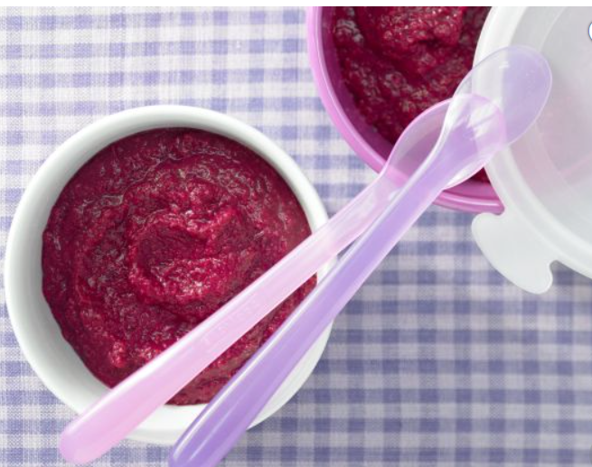

Vegan banana pancakes

Description
Make these foolproof vegan banana pancakes. A guaranteed crowd pleaser with a fluffy, light texture, you'd never know they’re dairy and egg-free
Ingredients
- 1 large ripe banana (around 150g)
- 2 tbsp golden caster sugar
- ¼ tsp fine salt
- 2 tbsp vegetable oil, plus extra for cooking
- 120g self-raising flour
- ½ tsp baking powder
- 150ml oat, almond milk or soya milk
- syrup, sliced banana and berries, to serve (optional)
Steps
-
Mash the banana in a mixing bowl. Stir in the sugar, salt and oil. Add the flour and baking powder and mix thoroughly. Make a well in the centre and gradually whisk in the milk. The batter should be a thick, droppable consistency.
- Heat a little oil in a frying pan over a medium heat. Add 2 tbsp of the batter to make American-style pancakes. You will be able to make about 4-5 at a time. Fry on each side for 2-3 mins until golden. Serve with syrup, sliced banana and berries, if you like.